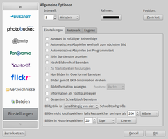

Wally
Dieser Artikel wurde für die folgenden Ubuntu-Versionen getestet:
Ubuntu 14.04 Trusty Tahr
Zum Verständnis dieses Artikels sind folgende Seiten hilfreich:
Wally  ist ein auf Qt basierendes, plattformübergreifendes Programm zum Wechseln des Hintergrundbilds. Unterstützt werden zahlreiche Bilderquellen: neben lokalen oder via FTP erreichbaren Dateien und Ordnern zählen dazu verschiedene Online-Bilder-Dienste, die Google Bildersuche sowie die Portale Vladstudio und deviantART .
ist ein auf Qt basierendes, plattformübergreifendes Programm zum Wechseln des Hintergrundbilds. Unterstützt werden zahlreiche Bilderquellen: neben lokalen oder via FTP erreichbaren Dateien und Ordnern zählen dazu verschiedene Online-Bilder-Dienste, die Google Bildersuche sowie die Portale Vladstudio und deviantART .
Neben KDE 4 werden laut den Angaben der Homepage weitere Desktop-Umgebungen wie GNOME (2 und 3), Xfce (siehe auch Problembehebung) sowie alleinstehende Fenstermanager wie FluxBox, BlackBox und WindowMaker unterstützt. Für die Desktop-Oberfläche Unity ist Wally nicht geeignet.
Installation¶
 Das Programm ist in den offiziellen Paketquellen enthalten. Unglücklicherweise wurde es unter Ubuntu so paketiert, dass zahlreiche KDE-Abhängigkeiten mitinstalliert werden. Nur für KDE 4 wird daher die Installation [1] des folgenden Pakets empfohlen:
Das Programm ist in den offiziellen Paketquellen enthalten. Unglücklicherweise wurde es unter Ubuntu so paketiert, dass zahlreiche KDE-Abhängigkeiten mitinstalliert werden. Nur für KDE 4 wird daher die Installation [1] des folgenden Pakets empfohlen:
wally (universe)
 mit apturl
mit apturl
Paketliste zum Kopieren:
sudo apt-get install wally
sudo aptitude install wally
Fremdpaket¶
Wer nicht mit KDE arbeitet, sondern eine der oben genannten Desktop-Umgebungen oder einen reinen Fenstermanager einsetzt, lädt besser ein Fremdpaket  herunter und installiert es manuell [2]. Auf diesem Weg umgeht man die Installation von ca. 60 MiB Abhängigkeiten, die die Version aus den offiziellen Quellen nachzieht. Bitte darauf achten, dass
herunter und installiert es manuell [2]. Auf diesem Weg umgeht man die Installation von ca. 60 MiB Abhängigkeiten, die die Version aus den offiziellen Quellen nachzieht. Bitte darauf achten, dass
das Paket (.deb) zur eigenen Systemarchitektur (32- oder 64-Bit) passt und
der Paketname keinen Zusatz "_kde4_" enthält.
Hinweis!
Fremdpakete können das System gefährden.
Verwendung¶
Bei Ubuntu-Varianten mit einem Anwendungsmenü startet man das Programm über den Menü-Eintrag "Sonstiges -> Wally" (Installation aus den offiziellen Quellen) oder "Zubehör -> Wally" (Installation als Fremdpaket) [4].
Beim ersten Programmstart wird eine Haftungsausschlusserklärung angezeigt, mit der sich der Programmautor gegen die missbräuchliche Nutzung von Bildern aus Online-Diensten absichern will. Wer Wally nutzen möchte, muss dieser ausdrücklich zustimmen. Anschließend folgt eine (abschaltbare) Programminformation, bevor die Anwendung als Symbol im Benachrichtigungsfeld im Panel auftaucht. Die weitere Bedienung (und auch das Beenden) erfolgt ausschließlich über dieses Panel-Applet, dessen Menü über die rechte Maustaste  erreichbar ist.
erreichbar ist.
Über das Symbol lässt sich ablesen, ob Wally aktiviert oder deaktiviert ist. Die Verwendung ist unkompliziert: über die Einstellungen werden entweder lokale Bilder bzw. Ordner hinzugefügt oder ein Online-Dienst entsprechend konfiguriert. Welche Online-Dienste konkret verwendet werden sollen, wird in den Einstellungen festgelegt. Im Einzelnen sind dies (alphabetisch):
| Online-Dienste |
Google Bildersuche
Pro Online-Dienst lassen sich eine oder mehrere Suchabfragen mit Stichwörtern zum gesuchten Motiv definieren. Optional kann man die gefundenen Bilder in einem Ordner eigener Wahl zwischenspeichern lassen. Leider ist es nur bei Flickr möglich, die gewünschte Bildgröße vorab zu bestimmen. Benutzt man dagegen die allgemeinen Programm-Einstellungen, kann man festlegen, welche Größe die gefundenen Bilder in Relation zur eigenen Desktop-Auflösung haben sollen:
unabhängig
mindestens 1/2
mindestens 3/4
größer als
Dabei kann es je nach Vorgabe passieren, dass anscheinend keine Bilder in der Wunschgröße gefunden werden, da diese nicht zur Verfügung steht (aufgetreten beispielsweise bei Picasaweb). Auch die Angabe von Präferenzen zum Seitenverhältnis der Bilder (4:3 oder Breitbildformat) ist nicht möglich.
Verlauf¶
Über die "Historie" genannte Funktion kann man nachschlagen, welche Bilder von Wally gefunden wurden (nützlich, wenn man die Bilder nicht in einem separaten Ordner zwischenspeichern lässt).
Einstellungen¶
|  |
| Allgemeine Einstellungen |
Die Einstellungen finden sich etwas versteckt am unteren Ende der Liste mit den Online-Diensten. Untergliedert sind diese in drei Reiter (Tabs). Konfigurationsdaten werden in der Datei ~/.config/BeCrux/wally.conf und im Ordner ~/.wally/ im Homeverzeichnis gespeichert.
Problembehebung¶
Xfce¶
Entgegen den Angaben auf der Homepage funktioniert Wally unter Xfce 4.10 bzw. ab Xubuntu 12.10 nur eingeschränkt. Zwar werden Bilder gesucht und optional auch heruntergeladen, aber ein automatischer Wechsel des Hintergrundbilds findet nicht statt. Behoben wurde dieses Problem erst mit der Version 2.4.5.
Alternativ kann man auf Variety ausweichen, das eine vergleichbare Funktionalität bietet.
Links¶
Wally Wallpaper Changer 2.4.2 Released With GNOME Shell Support
- Blogbeitrag, 09/2011Desktop-Hintergrund
 Übersichtsartikel
Übersichtsartikel
- Erstellt mit Inyoka
-
 2004 – 2017 ubuntuusers.de • Einige Rechte vorbehalten
2004 – 2017 ubuntuusers.de • Einige Rechte vorbehalten
Lizenz • Kontakt • Datenschutz • Impressum • Serverstatus -
Serverhousing gespendet von